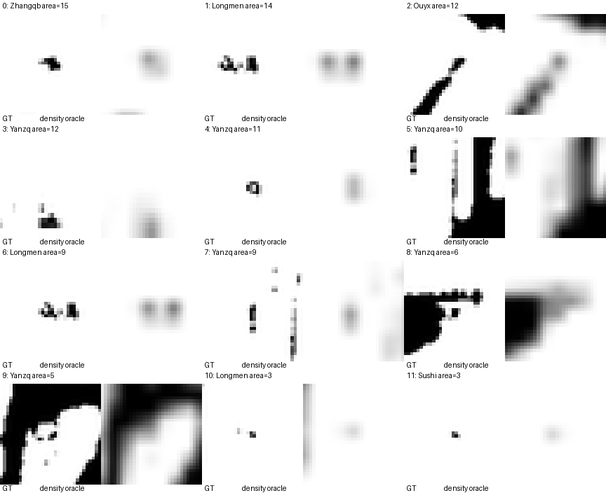
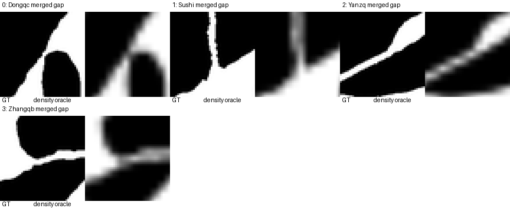

[
{
"contactsheet_index": 0,
"target_path": "font/train/new/ZhangqbJT/images_text_denoised/崇.png",
"character": "崇",
"label": 4,
"area": 15,
"bbox_xyxy": [
300,
286,
306,
290
],
"oracle_peak_in_original_support": 0.3558938205242157
},
{
"contactsheet_index": 1,
"target_path": "font/train/new/LongmenJT/images_text_denoised/終.png",
"character": "終",
"label": 9,
"area": 14,
"bbox_xyxy": [
264,
393,
268,
397
],
"oracle_peak_in_original_support": 0.4889973998069763
},
{
"contactsheet_index": 2,
"target_path": "font/train/new/OuyxJT/images_text_denoised/拱.png",
"character": "拱",
"label": 3,
"area": 12,
"bbox_xyxy": [
179,
221,
184,
225
],
"oracle_peak_in_original_support": 0.4378407895565033
},
{
"contactsheet_index": 3,
"target_path": "font/train/new/YanzqJT/images_text_denoised/葷.png",
"character": "葷",
"label": 3,
"area": 12,
"bbox_xyxy": [
271,
443,
277,
446
],
"oracle_peak_in_original_support": 0.36897212266921997
},
{
"contactsheet_index": 4,
"target_path": "font/train/new/YanzqJT/images_text_denoised/海1.png",
"character": "海",
"label": 12,
"area": 11,
"bbox_xyxy": [
16,
398,
20,
402
],
"oracle_peak_in_original_support": 0.26854321360588074
},
{
"contactsheet_index": 5,
"target_path": "font/train/new/YanzqJT/images_text_denoised/海1.png",
"character": "海",
"label": 11,
"area": 10,
"bbox_xyxy": [
39,
317,
41,
323
],
"oracle_peak_in_original_support": 0.13923482596874237
},
{
"contactsheet_index": 6,
"target_path": "font/train/new/LongmenJT/images_text_denoised/終.png",
"character": "終",
"label": 8,
"area": 9,
"bbox_xyxy": [
257,
393,
261,
397
],
"oracle_peak_in_original_support": 0.4043926000595093
},
{
"contactsheet_index": 7,
"target_path": "font/train/new/YanzqJT/images_text_denoised/海1.png",
"character": "海",
"label": 9,
"area": 9,
"bbox_xyxy": [
26,
307,
28,
312
],
"oracle_peak_in_original_support": 0.3476945459842682
},
{
"contactsheet_index": 8,
"target_path": "font/train/new/YanzqJT/images_text_denoised/百.png",
"character": "百",
"label": 2,
"area": 6,
"bbox_xyxy": [
364,
368,
366,
371
],
"oracle_peak_in_original_support": 0.4594285786151886
},
{
"contactsheet_index": 9,
"target_path": "font/train/new/YanzqJT/images_text_denoised/海1.png",
"character": "海",
"label": 6,
"area": 5,
"bbox_xyxy": [
61,
289,
64,
292
],
"oracle_peak_in_original_support": 0.24601715803146362
},
{
"contactsheet_index": 10,
"target_path": "font/train/new/LongmenJT/images_text_denoised/使.png",
"character": "使",
"label": 3,
"area": 3,
"bbox_xyxy": [
141,
290,
143,
292
],
"oracle_peak_in_original_support": 0.14399126172065735
},
{
"contactsheet_index": 11,
"target_path": "font/train/new/SushiJT/images_text_denoised/容.png",
"character": "容",
"label": 7,
"area": 3,
"bbox_xyxy": [
202,
421,
204,
423
],
"oracle_peak_in_original_support": 0.139158234000206
}
]

[
{
"contactsheet_index": 0,
"target_path": "font/train/new/DongqcJT/images_text_denoised/惟.png",
"character": "惟",
"oracle_component": 1,
"source_components": [
1,
4
],
"source_component_areas": [
6281,
17023
],
"closest_source_pixels_xy": [
[
238,
157
],
[
240,
158
]
],
"closest_distance_pixels": 2.23606797749979,
"review_crop_xyxy": [
215,
133,
263,
181
]
},
{
"contactsheet_index": 1,
"target_path": "font/train/new/SushiJT/images_text_denoised/容.png",
"character": "容",
"oracle_component": 4,
"source_components": [
4,
6
],
"source_component_areas": [
26889,
3920
],
"closest_source_pixels_xy": [
[
170,
314
],
[
167,
314
]
],
"closest_distance_pixels": 3.0,
"review_crop_xyxy": [
144,
290,
192,
338
]
},
{
"contactsheet_index": 2,
"target_path": "font/train/new/YanzqJT/images_text_denoised/海1.png",
"character": "海",
"oracle_component": 1,
"source_components": [
1,
3
],
"source_component_areas": [
4287,
4913
],
"closest_source_pixels_xy": [
[
239,
93
],
[
241,
96
]
],
"closest_distance_pixels": 3.605551275463989,
"review_crop_xyxy": [
216,
70,
264,
118
]
},
{
"contactsheet_index": 3,
"target_path": "font/train/new/ZhangqbJT/images_text_denoised/新.png",
"character": "新",
"oracle_component": 3,
"source_components": [
3,
4
],
"source_component_areas": [
13233,
1323
],
"closest_source_pixels_xy": [
[
74,
277
],
[
75,
280
]
],
"closest_distance_pixels": 3.1622776601683795,
"review_crop_xyxy": [
50,
254,
98,
302
]
}
]